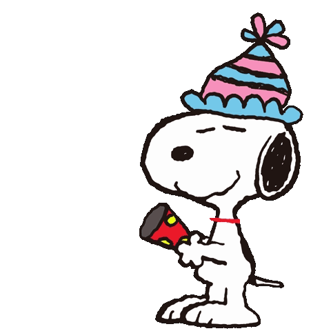
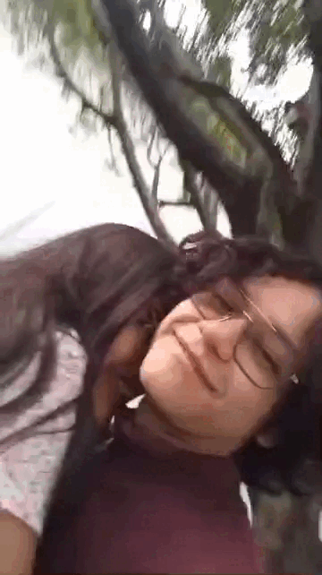
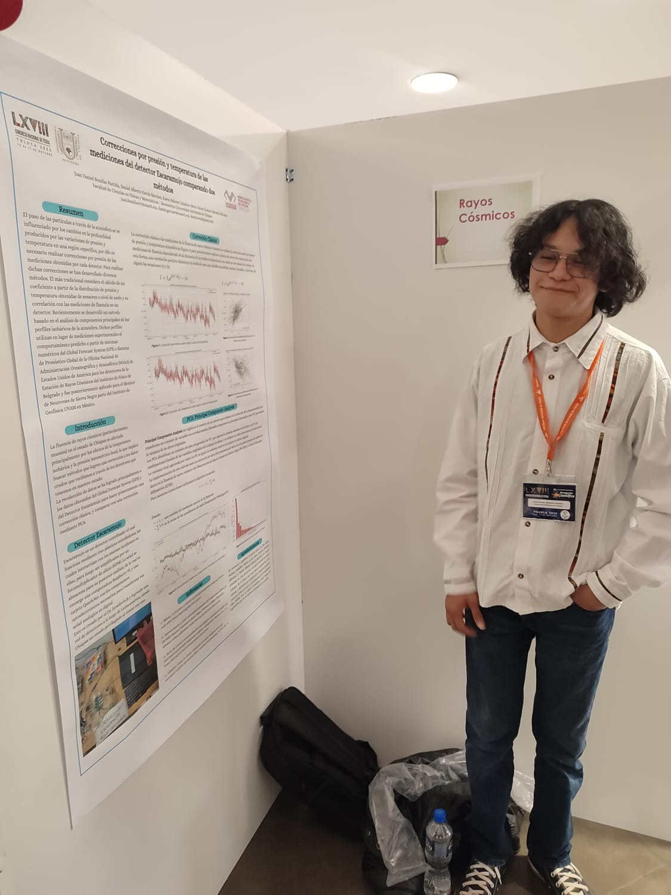
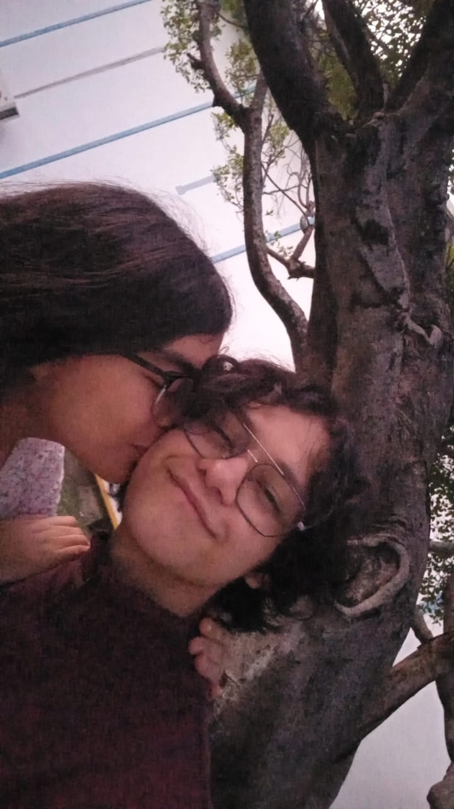
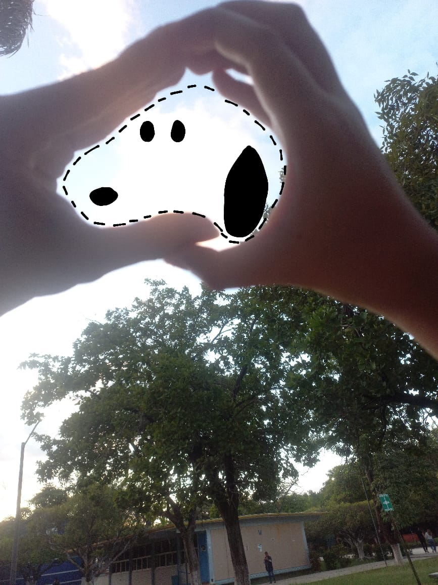

Feliz año nuevo, cariño

Tuve que volver a recordar como programar una página jsjsjs, de hecho estoy utilizando VS Code, lo cual para esto nunca lo había utilizado.
No sé que tan bien me saldrá con VS Code, pero espero que sea mucho más estético que las página diseñadas anteriormente

Te amo preciosa, has sido lo mejor que
me ha pasado en el año, y se que en la vida, también. Quiero seguir enfermo solo de amor por ti.
Estoy muy feliz mi vida, este año a pesar de algunas cosas feas, fue lindo, y tengo muchas cosas que enumerar jsjs, y las he colocado en este orden (de forma ascendente):
Haber pasado el 4to semestre: Como siempre, espero lo peor jsjs, y creí que no iba a pasar (sobretodo Álgebra Lineal II), pero gracias al Creador pude, aunque siga debiendo una materia jsjs.
Haber terminado mi póster: Pensé que no podría, hasta la fecha sigo diciendo que mi trabajo no es muy bueno, pero luego mis compañeros me recuerdan que hacer el trabajo de un doctorado en Chiapas, no está nada mal (si hay potencial jsjsjs)
Asistir al Congreso Nacional de Física: Fue un privilegio para mí haber asistido, fue muy bonito, lloré, pero valió la pena (pero no tanto como para visitar Toluca de nuevo).
Aprender crochet: Aunque no lo parezca, si es un logro para mí jsjjs, pq creí que no sería capaz y ahora puedo hacer ballenitas deformes jsjs, que lindo.
Seguir en la alabanza: A pesar de tener crisis por ratos y desánimos, agradezco ser tan terco como para no salirme a pesar de mis batallas.
Tenerte como mi pareja: No sabes cuanto me alegra esto, no lo veo como un logro, más bien, es un privilegio, que Él nos permitiera ser novios, y que tu me siguieras buscando a pesar de lo que vivimos,
hace que no me queje de lo que sufrimos, porque ha valido la pena, y cada día es un logro para mí despertar sabiendo que aún me amas, porque yo aún te amo como cuando te lo confesé por primera vez.
Ahora, te presento las fotos "top" del año jsjjss:

Así como lo ves, este mugroso te extrañó toda la semana que se fue (es que te ama mucho)

Definitivamente de mis fotos favoritas, me encantan tus besos (que se repita jsjjs)

Esta también me gusta mucho, quedó bonito el Snoopy jsjsj

Me encanta también esta foto, sales tan tierna, tan preciosa jsjsj

Me es fundamental colocar esta, ya que, es increíble como ha evolucionado nuestra relación, el pasar de ser amigos a ser pareja, puedo considerar que es de las cosas que, si me preguntaran hace tres años, diría que lo ve imposible,pero ahora agradezco que haya pasado.
Finalmente, esta es la canción que cada que la escucho, pienso en ti... Te amo, y algo más.